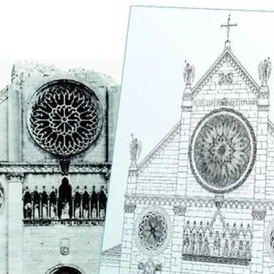

da sab 12 set a gio 31 dic
Mostra “IL RECUPERO E LA RICOSTRUZIONE DEL DUOMO DI GEMONA. Dai crolli alla rinascita nei disegni tecnici di Guido Brollo e nella documentazione fotografica”
Il 12 settembre alle 18 presso la Cappella Feriale del Duomo di Gemona sarà inaugurata la mostra: “IL RECUPERO E LA RICOSTRUZIONE DEL DUOMO DI GEMONA. Dai crolli alla rinascita nei disegni tecnici di Guido Brollo e nella documentazione fotografica”. Tutti sono invitati a…
 Indicazioni
Indicazioni
- Costi e prenotazioni
- Costo non indicato · Prenotazione non indicata
- Programma
- Programma da verificare. Apri la fonte ufficiale per orari e possibili aggiornamenti.
- In caso di maltempo
- Nessuna indicazione specifica pubblicata.
- Note
- Acquisito automaticamente dalla fonte.
L’EVENTO
Descrizione completa
Il 12 settembre alle 18 presso la Cappella Feriale del Duomo di Gemona sarà inaugurata la mostra: “IL RECUPERO E LA RICOSTRUZIONE DEL DUOMO DI GEMONA. Dai crolli alla rinascita nei disegni tecnici di Guido Brollo e nella documentazione fotografica”.
Attraverso fotografie, disegni e documenti tecnici, la mostra, curata da Augusto Messetti, Mauro Pascoli e Mauro Vale, parte da alcuni sintetici riferimenti alla storia dell’edificio per ripercorrere le diverse fasi della sua rinascita: dalla verifica dei danni provocati dal terremoto agli interventi di consolidamento e messa in sicurezza delle strutture rimaste in piedi, dalla progettazione dell’intervento di ricostruzione fino all’esito finale.
Il percorso vuole restituire la dimensione collettiva e la straordinaria complessità di quell’impresa, riconoscendo l’impegno, le competenze e la passione di tecnici, progettisti e maestranze che lavorarono per restituire alla comunità gemonese uno dei suoi più importanti luoghi identitari.
All’interno di questa storia corale, la mostra riporta alla luce anche il contributo, finora poco conosciuto, di Guido Brollo, geometra e artista gemonese, che negli anni successivi al terremoto partecipò al lavoro di documentazione necessario alla ricostruzione del Duomo. Brollo, erede di una tradizione che affondava le proprie radici in una famiglia di decoratori gemonesi attiva tra la metà dell’Ottocento e l’inizio del Novecento, realizzò accurati rilievi tecnici dello stato di fatto, riportando in scala sulle tavole i valori e i particolari del monumento danneggiato e, successivamente, le scelte relative all’impegnativo progetto di ricostruzione curato dalla Soprintendenza. Un lavoro paziente e minuzioso nel quale le competenze tecniche del geometra si unirono alla sensibilità e alla precisione del disegnatore.
Non è casuale, infine, la scelta del luogo: una mostra che racconta il Duomo trova spazio proprio all’interno del Duomo, mettendo in dialogo le immagini, i disegni e i documenti della ricostruzione con l’edificio che oggi ne rappresenta la testimonianza più concreta.
IL PROGRAMMA
Programma e orari
Appuntamenti raccolti dalle fonti elencate. Dove manca un orario, non è ancora disponibile in questa scheda.
Programma pubblicato
- Dal 2026-09-12 al 2026-12-31
INFORMAZIONI UTILI
Prima di partire
- Controllare la fonte prima di partire.
ORGANIZZAZIONE